I've re-uploaded DragonInquisition.com's fantastic builds because their site went down and I haven't been able to visit them in some time.
The other builds can be found on their respective pages:
Warrior Builds
Looking for effective DA: Inquisition warrior builds? You've come to the right place. All of these builds have been tested & played extensively on Nightmare difficulty and come with explanations on how to use the build, and which points to take as you level up.

Contents
Nightmare Two-Handed Warrior Build (Early Game)
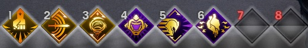
This is a standard, all-around safe Two-Handed early game (level 1-12) warrior build for Nightmare difficulty. Although it may seem strange to pick up so many skills in Vanguard (a defensive tree), it is very important to have guard-generating abilities, as this will greatly improve your survivability before you have access to guard-on-hit masterworks and Tier 2/3 crafted gear.
After this build, you can safely transition into the Two-handed Reaver, Champion, or Templar build, and respec later on to slightly adjust your skill point placement.
Points Spent: 12+
Two-Handed Tree: Block and Slash / Flow of Battle / Mighty Blow / Easy Target / Shield-Breaker / Whirlwind / Clear a Path
Vanguard Tree: War Cry / Charging Bull / I'll Cost You / Livid / Still Standing
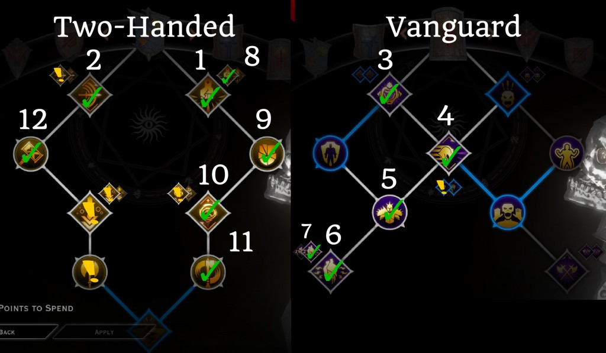
Keep in mind, this build is not designed to act as a main tank for your party. However, you will be able to off-tank, and take a decent amount of damage without dying and chugging potions.
Key Ideas:
- Good Single-target damage and control
- Decent AOE damage with Whirlwind and Charging Bull
- Ability to off-tank when necessary and pull enemies off your squishy party members
- Decent Guard generation to survive
Vanguard Tank (Early Game)
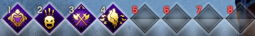
This is a basic tanking build that can be employed during the early portions of the game (levels 1-11, before you unlock Skyhold and your specialization). Afterwards, you can transition into any warrior specialization and continue playing as a tank/support, although the Champion spec would work best for pure tanking.
Points Spent: 11+
Vanguard: Challenge / War Cry / Battle Roar / Untouchable Defense / Trust the Steel / Cutting Words / Bodyguard / Over Here / It'll Cost You / Livid / Still Standing / Throw the Gauntlet
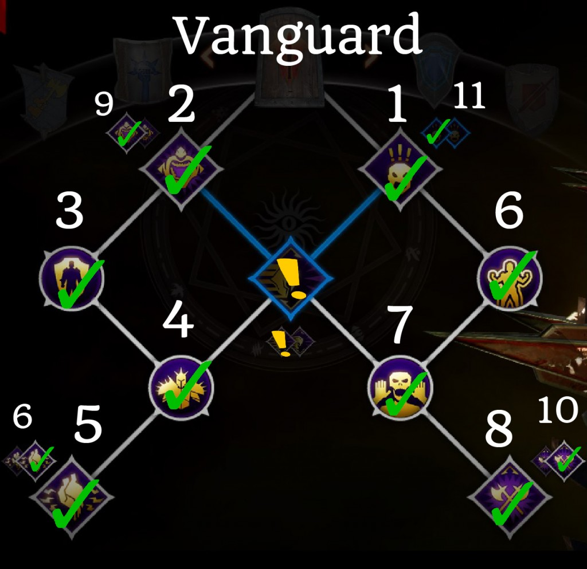
Note that Charging Bull is an optional skill for this build. Although it is a great all-around skill, it's not required for tanking, so it's up to you if you want to get it. Personally, I would only take it if I'm going to be manually controlling the tank a lot.
Basic Gameplay:
- If you're playing this build on AI, set War Cry and Livid as preferred skills under Tactics
- Start fights with a War Cry to get your guard up and taunt all enemies
- Use Challenge mostly as a safety net for when a single enemy is attacking other party members
- Livid is typically used after you lose most of the guard from War Cry
- Bodyguard can either be used all the time, or only when you're fighting enemies with lots of AOE attacks or your whole party is low on health
Ultimate Tank Build
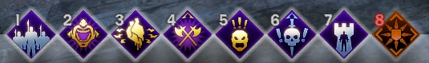
This build is designed for one thing, and one thing only – tanking on Nightmare difficulty. We are not going to take ANY skills from the Sword and Shield tree, because none of them really help us tank. Instead, we are going to almost completely max out the Vanguard and Champion trees, to create the beefiest tank possible who will never ever die or lose aggro.
Points Spent: 23
Vanguard Tree: Challenge / War Cry / Battle Roar / Untouchable Defense / Trust the Steel / Cutting Words / Bodyguard / Over Here / It'll Cost You / Livid / Still Standing
Champion Tree: All Skills
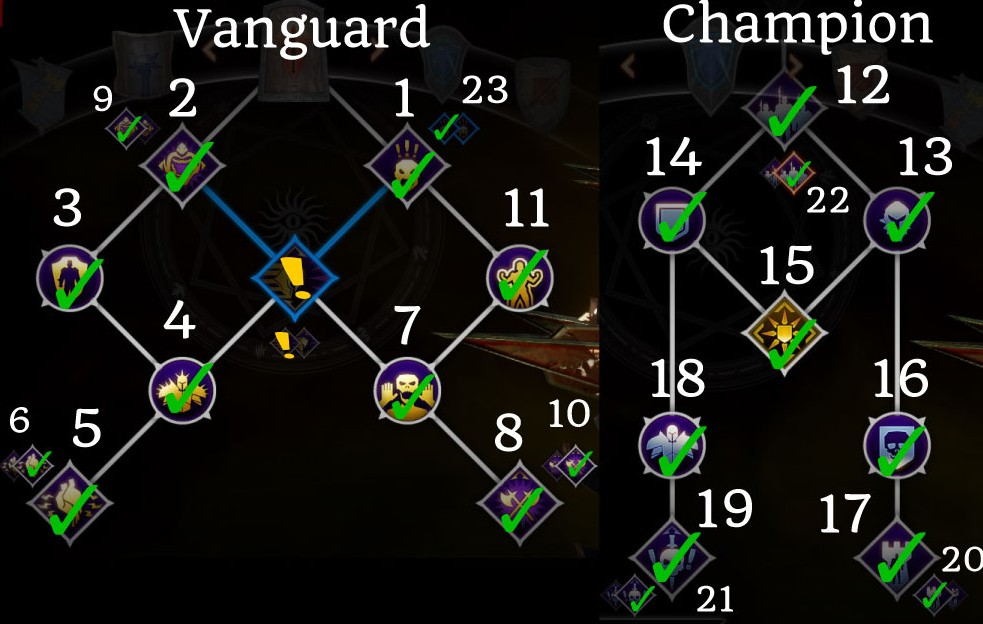
This build is slightly stronger than before with recent changes to the Line in the Sand and Livid skills, as well as the new Trespasser skill toggles. Although I'm still not a fan of Line in the Sand, you have room for it on your skills bar so you can try it out and see if you like it or not.
Note: for the Walking Fortress and Line in the Sand skills, both the old and new skill upgrades are good, so you can use whichever one you prefer.
Key Ideas:
- Very high survivability
- Lots of taunt skills
Build Guide Video:
Two-Handed Reaver Build
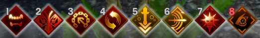
This is probably the highest damage build available to warriors. It has changed a bit with the release of the Trespasser skill toggles, but is still viable without the DLC. The build is relatively easy to play, but does have gear requirements that other classes and specializations don't have to worry about.
Points Spent: 20+
Two-Handed Weapon Tree: Mighty Blow / Shield-Breaker / Block and Slash / Flow of Battle / Pommel Strike / Guard-Smasher
Battlemaster Tree: Grappling Chain / Hamstring / Combat Roll / Coming Through / Deep Reserves
Reaver Tree: Ring of Pain / Painbringer / Blood Frenzy / Fervor / Scenting Blood / Devour / Lifeblood / Dragon Rage / Ravage
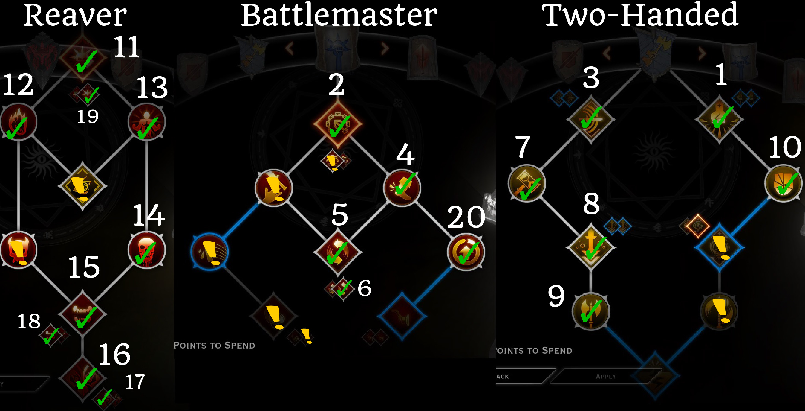
One thing to mention is that once you have access to all the reaver skills, the skills from the two-handed tree are no longer needed, since all of your damage will come from your reaver abilities. However, you should still have Pommel Strike and Block & Slash on your bar, because these two skills do have some situational uses. For example, Pommel Strike can be used to interrupt a dangerous spellcaster, while Block & Slash is great against shield-users, as they will often block your attacks and knock you down.
Basic Gameplay:
- If you're fighting against smaller enemies, start out by using Grappling Chain, ideally on a mage or an archer
- Use Combat Roll (Coming Through upgrade) , especially when enemies are grouped together – it deals a lot of damage!
- Cast Ring of Pain (with Painbringer upgrade) and start using Dragon Rage non-stop; when your health gets really low, use Devour
- Rinse and Repeat!
Important Notes:
- guard-on-hit masterworks are necessary for Reaver warriors. Craft a weapon/armor with fade-touched Silverite for +5 guard on hit; if that's not enough, you can add on a secondary guard-on-hit masterwork with +3 guard, as these will stack together.
- If your Reaver is dying a lot, switch to the “Leashed Fury” Dragon Rage skill upgrade
- For your Focus skill, you can use either Rampage (on Iron Bull) or Mark of the Rift (on Inquisitor)
Build Guide Video:
Two-Handed Champion Build
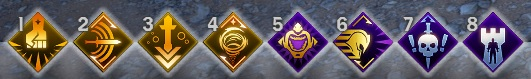
Credit for build idea goes to:Alren
This unconventional build is one of the most effective ways to solo the game without a party. As many other skill builds, the 2H Champion relies on one central skill interaction. That interaction is Walking Fortress, Flow of Battle, and Whirlwind.
Points Spent: 20+
Two-Handed Weapon Tree: Block and Slash / Flow of Battle / Mighty Blow / Easy Target / Shield-Breaker / Whirlwind / Vortex of Steel / Clear a Path
Champion: All skills except Line in the Sand upgrade and Counterstrike
Vanguard: War Cry / Charging Bull / Cutting Words
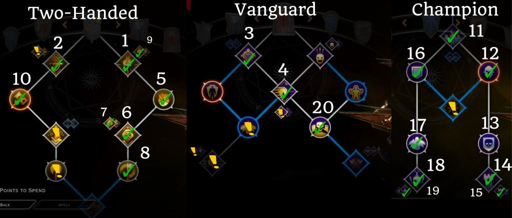
The basic way this build works is this: Flow of Battle reduces the cooldown of all your skills by 1 second whenever you score a critical hit. So when you pair it up with Whirlwind (skill with the highest number of hits available to a warrior) and high critical strike chance, you can reduce your cooldown times so quickly that you can use Walking Fortress with very little downtime.
Since Walking Fortress gives you complete damage invulnerability for 8 seconds, you can imagine how strong this skill combination is, especially for soloing the game. The other skills you get are just icing on top of the cake.
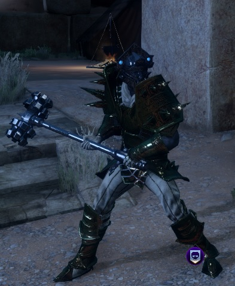
Early on (level 1-11) this build plays like a standard two-handed warrior, so you can choose to grab the 2 optional skills in the Two-Handed tree: Pommel Strike and Guard-Smasher. As soon as you unlock the Champion specialization you can respec and drop these, so you can reach your most important skills faster. If you're having survivability issues at early levels, consider picking up Livid and the Still Standing upgrade ASAP.
Very late game, you can also try adding Livid (Vanguard skill) to your arsenal, as it works very well with this build by providing you with both damage and survivability.
Note: The most important requirement for this build is high critical strike chance; the more you crit, the more you reduce your cooldown times, which means the more you can use Walking Fortress.
The easiest way to increase your crit chance is to craft gear with leather or cloth offensive slots. Also, keep your eyes open for any dropped gear that either gives you Cunning or Crit Chance directly. Here are some particularly good item choices for raising your crit chance:
Superb Amulet of Cunning, Mask of the Grand Duchess or a Vitaar with crit chance if you're Qunari
Basic Gameplay:
- Use Charging Bull to start fights, and whenever it's not on cooldown – it's great for damage, guard generation, and even CC
- follow up with War Cry to get even more guard
- Use Walking Fortress, and then immediately use Whirlwind
- Against bosses and tough enemies like Pride Demons, use To the Death – this taunt increases the damage the enemy takes the longer its up, so this will allow you to solo powerful enemies quite effectively
- Use Mighty Blow as your main single-target DPS skill
- Block and Slash is used mostly against enemies with shields, as they will block a lot of your attacks and can knock you down frequently
- Fill your 8th skill slot with either Mark of the Rift or Counterstrike
Two-Handed Templar Build
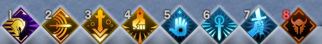
Despite my early thoughts on the Templar spec, it works far better with a two-handed weapon than with a shield and one-hander. With decent gear you can do some serious damage; not to mention Templars give the party 25% bonus damage, 10% damage resistance, a further 50% damage boost anytime your Templar is unconscious, and a team-oriented Focus skill (Rally).
Points Spent: 18+
Two-Handed Weapon: Mighty Blow / Easy Target / Shield-Breaker / Block and Slash / Flow of Battle / Pommel Strike / Guard-Smasher
Vanguard: Challenge / Charging Bull / Gore and Trample
Templar: Everything except Rally, Spell Purge upgrade, and Blessed Blades upgrade
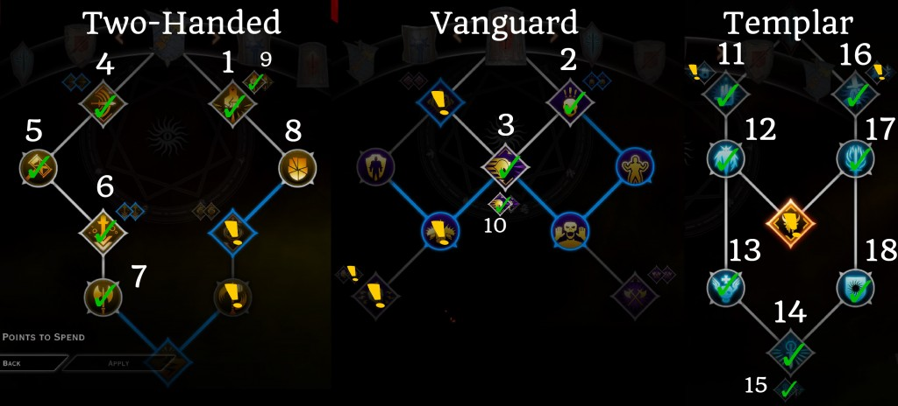
Note: if you're having survivability issues early on, consider picking up Livid and the Still Standing upgrade ASAP
The build is very simple, and also very fun to play thanks to your self-combo (Wrath of Heaven + Spell Purge). The build relies on the two-handed tree to provide you with DPS passives/skills, while the Templar tree gives you a high damage combo and your amazing buff/debuff skills.
For your 8th skill, grab either Rally or Mark of the Rift.
After you finish the core build, you can complete the Templar tree by taking the two skill upgrades, especially Annulment (Spell Purge upgrade) if you have Trespasser. You can also go down into the Vanguard tree to pick up Livid to give you more damage and survivability.
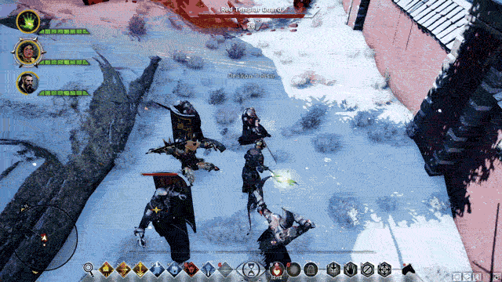
The Wrath of Heaven + Spell Purge combo in action
Basic Gameplay:
- Keep Blessed Blades up whenever it's off cooldown
- Start combat with Charging Bull (Gore and Trample upgrade) – this will knock down enemies, generate some guard, do some damage, and also make your next ability cost no stamina
- With as many enemies near you, use Wrath of Heaven, and then immediately use Spell Purge for a damage combo – in my experience this is the HIGHEST damage combo in the game, and the best part is, you can cast it by yourself!
- Use your 3 Two-handed skills while your damage combo is on cooldown – Mighty Blow (highest single target damage), Block and Slash (great against shield-users), and Pommel Strike
- Keep using Charging Bull whenever you need guard, or when you're low on stamina
- Use your Focus skill (Rally) for difficult fights (like Dragons) when your whole party is dying